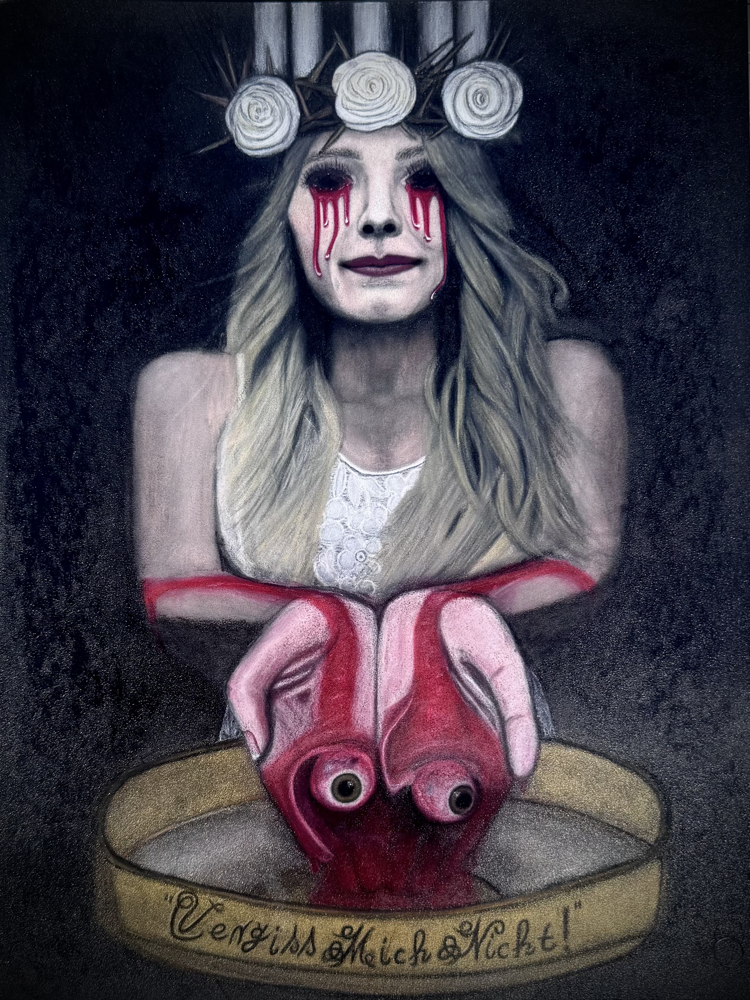

From “The Existentialist” Series — Manuel Cech
Lucia · Fine Art Print
Museum-grade fine art giclée print.
€119
Buy Print — €119
Secure payment via Stripe

Museum-grade fine art giclée print.
Multidisciplinary Artist · Magician · Musician
Based on Fuerteventura, Canary Islands.
Exploring identity, decay, illusion and transformation through Existential Realism.
Started magic at age 3; later certified pyrotechnician and illusion engineer in Germany. Worked across stage productions, music videos and large-scale special effects before focusing on fine art and existential realism.
The first major artwork of The Existentialist Series, “Lucia”, was completed in 2025 — a new chapter combining realism, emotion and philosophical depth.